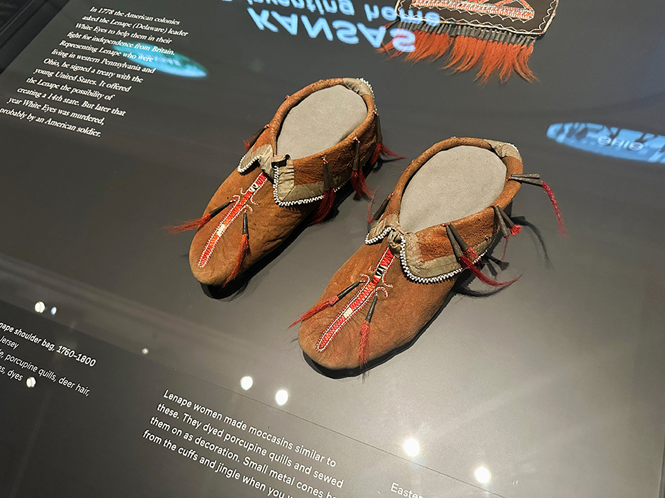
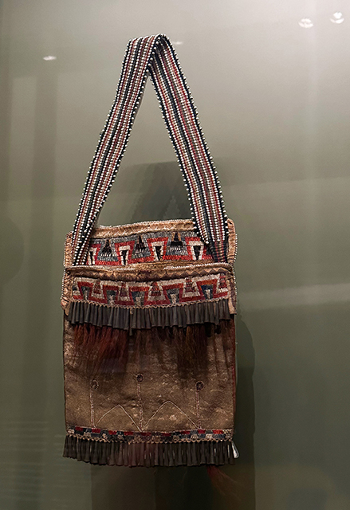

November also marks the harvest season in many indigenous cultures. It is a time when native communities come together to celebrate their connection to the land, express gratitude for nature's abundance, honor traditional agricultural practices, and for families to connect. Recognizing Indigenous Peoples Month during this time allows for the inclusion of cultural activities and events related to their traditions and folklore. All of that provides a platform for education, dialogue, and reflection on the ongoing struggles for indigenous rights, land sovereignty, and cultural preservation.

Moccasins, 1800-1850, Easter Great Lakes m Hide, silk ribbon, metal cones, glass beads, porcupine quills, deer hair, dyes. “Lenape women made moccasins similar to these. They dyed porcupine quills and sewed them on as decoration. Small metal cones hang from the cuffs and jingle when you walk.” Source: National Museum of the American Indian in New York

Lenape pouch 1810-1830 Mid-Atlantic region This early Lenape bag is decorated with two bands of porcupine quill embroidery. Characteristically, one band is on the back panel above, and the other is on the pouch.